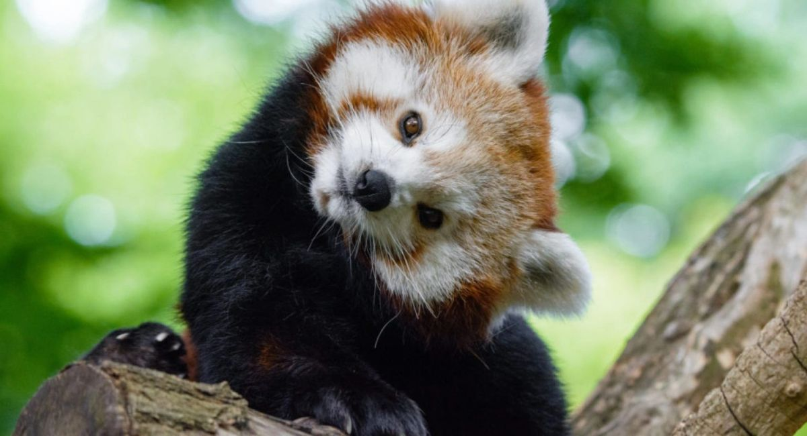

We inspire people of all ages to protect wildlife and natural ecosystems through conservation, education, and community engagement.
The Frank Verney Foundation is dedicated to protecting wildlife, promoting environmental stewardship, inspiring the next generation through education, and supporting conservation.
A world where wildlife thrives, ecosystems are preserved, and every child and community has the knowledge and opportunity to engage in conservation - where humans and nature coexist harmoniously.
Awareness, responsibility, and respect for all living beings. We believe everyone can contribute toward environmental protection - by volunteering, donating, or spreading the word.
Since 1997 we've planted over 10,000 trees, run community clean-up drives, and brought free conservation education to countless children and families.

The Frank Verney Foundation for Wildlife, Conservation, and Education was founded to inspire people of all ages to protect wildlife and natural ecosystems through conservation, education, and community engagement.
By connecting people with nature and empowering them to take action, the Foundation is building a future where wildlife thrives and every person can help be their voice.
Since our establishment in 1997, we have made significant contributions toward environmental protection - successfully planting over 10,000 trees and organizing multiple community clean-up drives.
Our team consists of environmental scientists, educators, and activists with years of experience in their fields. We use that expertise to drive change and promote sustainable practices.
Protecting wildlife and restoring the habitats they depend on through hands-on projects and community partnerships.
Six free, hands-on programs that bring the wonder of wildlife to children and families - and turn curiosity into stewardship.
Clean-up drives, tree plantings and events that unite our community around a shared commitment to nature.
Dedicated leaders guiding the Foundation's vision for wildlife and conservation.

We believe everyone can contribute toward environmental protection. Join us by volunteering, donating, or simply spreading awareness.